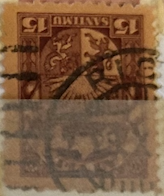
| SOURCE | TITLE| IMAGE MATCH | click to source page |
| eBay | Slovakia Postcard Art War Soldier in Fight Scene 1917 Unposted Antique | eBay | 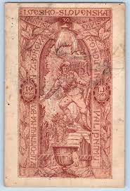 |
| Banknote World | Naumburg 50 Pfennig 2 Pieces Notgeld Set, 1920, Mehl #928.2, UNC | 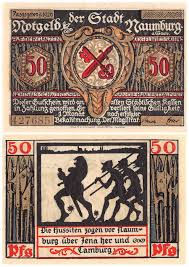 |
| eBay | Schalkau Notgeld: 1171.1 3. Kreuzritter Notgeldschein Stadt Schalkau bankfrisch | eBay | 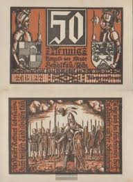 |
| GoAntiques | Antique Minton China Works Picture Tile - Shakespeare | 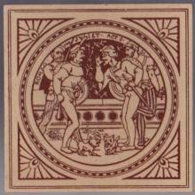 |
| Etsy | Irish Art Print of the Great Sword, Ancient Ireland Vintage Wall Art From Celtic Art of Scottish Highlanders and the Gallowglass in Ireland - Etsy | 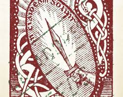 |
| Stamp Community Forum | Help Identifying Potential Oddities Of GB Seahorse - Stamp Community Forum | 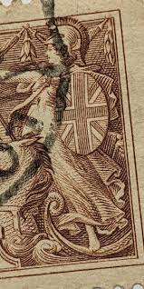 |
| Wikimedia.org | File:Altenburg - 50Pf. 1921 Prinzenraub (4).png - Wikimedia Commons | 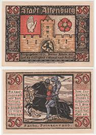 |
| Banknote World | Fuerstenwalde 20-50 Pfennig 9 Pieces Notgeld Set, 1921, Mehl #403.1a, UNC | 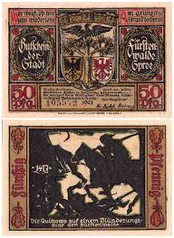 |
| Russian Philately | 1935 Sc 421-424 3rd Congress of Persian Art and Archaeology Scott 569-572 for sale at Russian Philately | 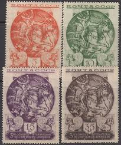 |
| Banknote World | Herstelle 50 Pfennig - 2 Mark 3 Pieces Notgeld Set, 1921, Mehl # 604.1, UNC | 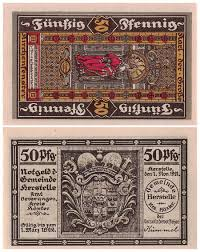 |
| X | Okay - there was a lot of interest in the Claidheamh Soluis stamp print, so here it is in original violet and a also a red option: https://t.co/P0ljLVSlOF Like and share like | 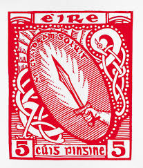 |
| Barnes & Noble | 1864 Poker Deck by U.S. Games Systems, Other Format | Barnes & Noble® | 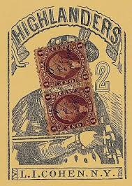 |
| Banknote World | Gernrode am Harz 25 - 75 Pfennig 3 Pieces Notgeld Set, 1921, Mehl #423.3a, UNC | 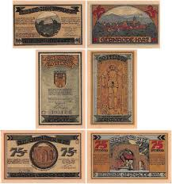 |
| Federal University of Agriculture, Abeokuta (FUNAAB) | 1921 GERMANY 5 PFENNIG | 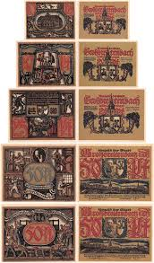 |
| Banknote World | Naumburg 50 Pfennig 12 Pieces Notgeld Set, 1920, Mehl #928.4, UNC | 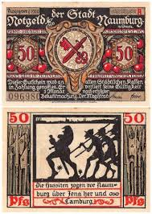 |
| eBay | 1921 Germany TREUENBRIEETZEN 50 Phennig Banknote / Notgeld | eBay | 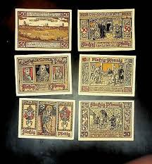 |
| Banknote World | Eisenach 50 Pfennig 6 Pieces Notgeld Set, 1921, Mehl #320.2, UNC | 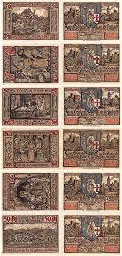 |
| Wikimedia.org | Category:Otto Pech - Wikimedia Commons | 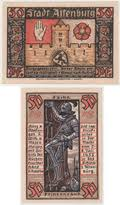 |
| eBay | Russian Stamp ~ Vintage 20 Kopecks 20k Stamp , 1910 ~ Imperial Russia ~ Eagle | eBay | 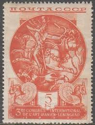 |
| Banknote World | Gernrode am Harz 25-75 Pfennig 5 Pieces Notgeld Set, 1921, Mehl # 423.2a, UNC | 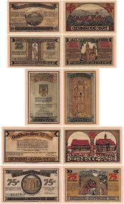 |
| 1934 seahorse stamp for sale | 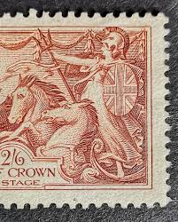 | |
| stamprussia.com | Russian Topical Stamps: MOSLEMS | 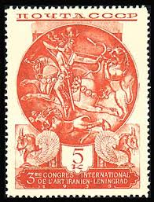 |
| Banknote World | Koenigswinter 25-75 Pfennig 3 Pieces Notgeld Set, 1921, Mehl #731.1 UNC | 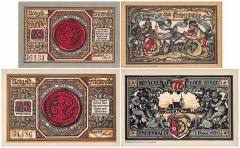 |
| eBay | 10432] - 3 x NOTGELD ESCHWEGE, Stadt, 5, 10, 25 Pf, o.D. (um 1921). G/M 352.2a | eBay | 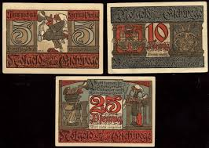 |
| Alphabetilately | Classic German Poster Stamps | 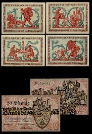 |
| eBay | Italy 1928 stamps commemorative USED Sas 228 CV $44.00 180617071 | eBay | 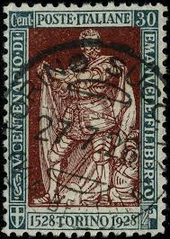 |
| Numista | 1 Mark - City of Marienburg (West Prussia) – Numista | 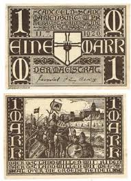 |
| An Claidheamh Soluis (The Sword of Light), Conradh na Gaeilge's weekly newspaper, was published between 1899 and 1932. Amongst its editors were Patrick Pearse and Eoin Mac Néill. The paper changed regularily | 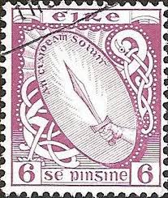 | |
| Discover 18 Riverdance and postage stamp art ideas | celtic artwork, postal stamps, stamp collecting and more | 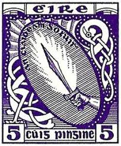 | |
| Numista | 50 Pfennigs (Luther Jubilee Series) - City of Eisenach (Thuringia) – Numista | 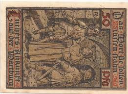 |
| eBay | Russia 569,CTO.Mi 528. Exhibition of Art,1935.Silver plate,Sassanian dynasty. | eBay | 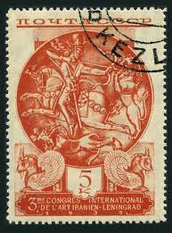 |
| sellosmundo.com | MAGYAR KIRALYI POSTA. Hungary Europe ref. 544 | 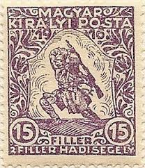 |
| Banknote World | Schalkau 50 Pfennig 6 Pieces Notgeld Set, Mehl #1171, UNC | 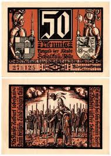 |
| eBay | 335498] Germany, Kirn a.d. Nahe Stadt, 50 Pfennig, 1920-09-09, UNC | eBay | 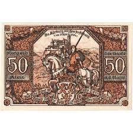 |
| eBay | 1921 GERMANY TORGAU 5-50 PFENNIG - SET of 4 - NOTGELD NOTES | eBay | 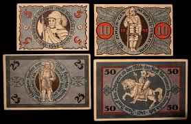 |
| eBay | 1241683] Germany, Eisenach, 50 Pfennig, 1921-05-31, UNC | eBay | 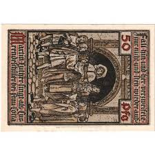 |
| Empirephilatelists.com | Ireland 1923 5d Deep Violet SG78 Fine MM Stamp|Empirephilatelists.com | 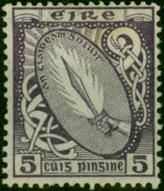 |
| AbeBooks | Shop Banknoten Collections: Art & Collectibles | AbeBooks: Versandhandel für... | 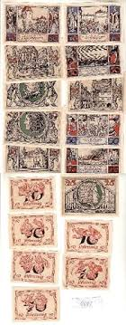 |
| WorthPoint | Koloman Moser deigned Art Deco Bond. Very attractive. | #22143321 | 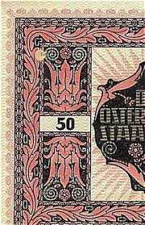 |
| The first seven stamps issued by the Ethiopian Empire in 1894, known as the Menelik Issue," were designed by J. Lagrange, the same artist responsible for the design of Emperor Menelik II's | 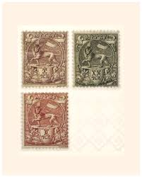 | |
| Numista | 25 Pfennigs - City of Neustadt bei Coburg (Coburg) – Numista | 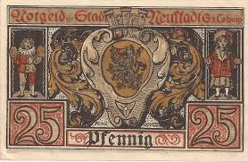 |
| Aukcijska Kuća Barac&Pervan | Barac&Pervan Auctions • Item | 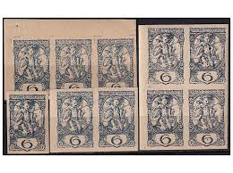 |
| PICRYL | Bolkenhain (Bolków) - 75Pf. a2 - Public domain banknote scan - PICRYL - Public Domain Media Search Engine Public Domain Search | 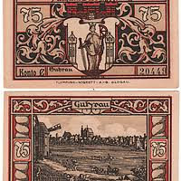 |
| Wikipedia | Postage stamps and postal history of Georgia - Wikipedia | 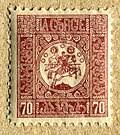 |
| Colnect | Stamp: Sword of Light (Ireland(Symbols 1940-68) Mi:IE 79Ab,Sg:IE 119b,Hib:IE D24A 📮 | 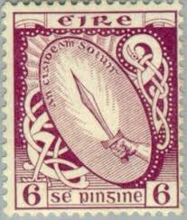 |
| Numista | 50 Pfennigs (History Series - Issue 3) - City of Schalkau (Thuringia) – Numista | 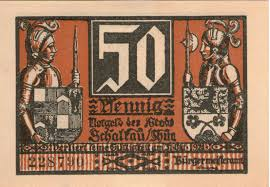 |
| eBay | Russia 1935 Sc.569-572 Used | eBay | 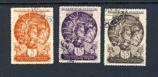 |
| eBay | Großbreitenbach 4 Scheine Notgeld .......................................2/20796 | eBay | 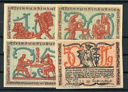 |
| Numista | 25 Pfennigs (Kreissparkasse Wittingen) - District of Isenhagen – Numista | 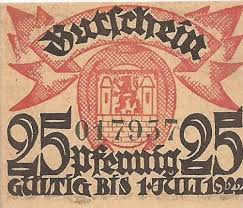 |
| eBay | Guhrau | eBay | |
| PICRYL | 26 Leobschutz Images: PICRYL - Public Domain Media Search Engine Public Domain Search | |
| Numista | 25 Pfennigs - City of Biedenkopf – Numista | |
| Cherrystone Auctions | U.S. and Worldwide Stamps; South America; Russia - January 13-14, 2010 - RUSSIA Semi-Postals | |
| eBay | 1921 Germany TORGAU 5 10 50 Phennig Banknote / Notgeld | eBay | |
| Wikimedia.org | Category:Georg von Frundsberg - Wikimedia Commons | |
| VCoins | Germany, Potsdam, 50 Pfennig, soldat 5, 1921-11-28, UNC(65-70), Mehl:1069.1a | |
| 70 Modern Fairytale ideas | modern fairytale, fairy tales, fairytale illustration | ||
| eBay | Russia USSR 3 stamps, 1923, not cancelled, not hinged. | eBay | |
| eBay | France Type Blanc 1900-24 4c Used Stamp Y&T 110 A23P48F13984 | eBay | |
| commonwealthstamps.com | Ireland 1940 Eire Issue SG 118 Sword of Light Fine Mint |
.png){kind=link}